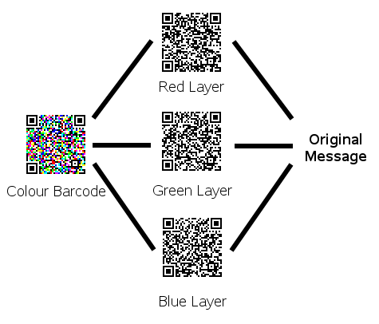

|
Zint Barcode Generator |
||
|---|---|---|
An obvious next step in the development of barcodes is to use colour instead of boring old black and white to encode data. This technique is not currently used by any barcode encoding standards in the wild but an indication of how it might be achieved can be gained with a little data processing and the Zint library.
This example takes an input string and splits it into three roughly equal length strings each of which is encoded and then combined to make a colour version of the symbol. This can then be decoded by applying red, green and blue filters to the resulting image and then decoding them using the same algorithm used to decode normal black and white symbols as shown below.

One advantage of this system is that finder patterns in the symbol show up clearly as black-on-white and so can be found using the methods already established for standard 2D barcodes. This can be clearly seen in the examples below.
Another advantage of this system is that it fits three times as much data into a symbol of a given size. Disadvantages are likely to become apparent when trying to decode these symbols in real-world applications: decoding will require larger processor overheads and more sophisticated algorithms. Telling white from yellow may be a particular problem.
The code below performs the encoding as done on the images above and outputs an array of elements as characters representing colours. Putting this together as an image requires additional code.
#include <stdio.h>
#include <zint.h>
#include <string.h>
int main(int argc, char **argv)
{
struct zint_symbol *red_symbol;
struct zint_symbol *green_symbol;
struct zint_symbol *blue_symbol;
struct zint_symbol *colour_symbol;
int error = 0;
int i, j;
int input_len = strlen(argv[1]);
int snippet = input_len / 3;
char full_string[input_len + 5];
char red_string[(input_len / 3) + 2];
char green_string[(input_len / 3) + 2];
char blue_string[(input_len / 3) + 2];
int symbol_type = BARCODE_QRCODE;
if(input_len % 3 != 0) { snippet++; }
strcpy(full_string, argv[1]);
for(i = 0; i < snippet; i++) {
red_string[i] = full_string[i];
green_string[i] = full_string[i + snippet];
blue_string[i] = full_string[i + snippet + snippet];
}
red_string[i] = '\0';
green_string[i] = '\0';
blue_string[i] = '\0';
red_symbol = ZBarcode_Create();
green_symbol = ZBarcode_Create();
blue_symbol = ZBarcode_Create();
colour_symbol = ZBarcode_Create();
red_symbol->symbology = symbol_type;
green_symbol->symbology = symbol_type;
blue_symbol->symbology = symbol_type;
colour_symbol->symbology = symbol_type;
error = ZBarcode_Encode(red_symbol, (unsigned char *)red_string);
error += ZBarcode_Encode(green_symbol, (unsigned char *)green_string);
error += ZBarcode_Encode(blue_symbol, (unsigned char *)blue_string);
if(error != 0) {
printf("Some error occurred!\n");
ZBarcode_Delete(red_symbol);
ZBarcode_Delete(green_symbol);
ZBarcode_Delete(blue_symbol);
ZBarcode_Delete(colour_symbol);
return 1;
}
colour_symbol->width = red_symbol->width;
if(green_symbol->width > colour_symbol->width) { colour_symbol->width = green_symbol->width; }
if(blue_symbol->width > colour_symbol->width) { colour_symbol->width = blue_symbol->width; }
colour_symbol->rows = red_symbol->rows;
if(green_symbol->rows > colour_symbol->rows) { colour_symbol->rows = green_symbol->rows; }
if(blue_symbol->rows > colour_symbol->rows) { colour_symbol->rows = blue_symbol->rows; }
for(i = 0; i < colour_symbol->rows; i++) {
colour_symbol->row_height[i] = 1;
for(j = 0; j < colour_symbol->width; j++) {
int colourval;
colourval = 0;
if(red_symbol->encoded_data[i][j] == '1') { colourval += 4; }
if(green_symbol->encoded_data[i][j] == '1') { colourval += 2; }
if(blue_symbol->encoded_data[i][j] == '1') { colourval += 1; }
switch(colourval) {
case 0: colour_symbol->encoded_data[i][j] = '0'; break; /* white */
case 1: colour_symbol->encoded_data[i][j] = 'Y'; break; /* yellow */
case 2: colour_symbol->encoded_data[i][j] = 'M'; break; /* magenta */
case 3: colour_symbol->encoded_data[i][j] = 'R'; break; /* red */
case 4: colour_symbol->encoded_data[i][j] = 'C'; break; /* cyan */
case 5: colour_symbol->encoded_data[i][j] = 'G'; break; /* green */
case 6: colour_symbol->encoded_data[i][j] = 'B'; break; /* blue */
case 7: colour_symbol->encoded_data[i][j] = '1'; break; /* black */
}
printf("%c",colour_symbol->encoded_data[i][j]);
}
printf("\n");
}
ZBarcode_Delete(red_symbol);
ZBarcode_Delete(green_symbol);
ZBarcode_Delete(blue_symbol);
ZBarcode_Delete(colour_symbol);
return 0;
}
|
Appendix C |
|